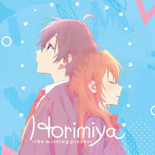

Horimiya
Synopsis: Kyouko Hori and Izumi Miyamura seem completely different at school, but outside of it they discover each other's hidden sides and form a heartfelt high school romance.
Total Episodes: 26
Episode Duration: 23 mins
Total Seasons: 1
Genre(s): Romance, Slice of Life, Comedy, School, Shounen
Type: TV
Studio(s): CloverWorks
Release Year: 2021
Start Date: January 10, 2021
End Date: April 4, 2021
Airing Status: Finished
Broadcast Schedule: Sundays (JST)
Age Rating: PG-13 - Teens 13 or older
IMDb Rating: 8.1/10
Available On: Crunchyroll, Netflix
Related Works: Horimiya: The Missing Pieces